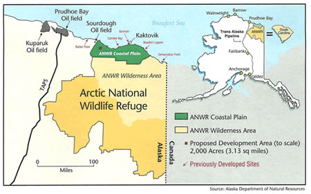
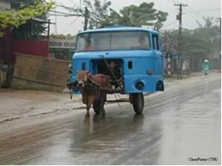
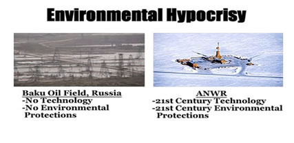

Center
for the Defense of Free Enterprise
Center
for the Defense of Free Enterprise
AGENDA 2005
Making a Difference
HOME ISSUES OPPOSITION PROJECTS DEFENDERS WISE USE BOOKSTORE ARCHIVE
|
|
|
HOME ISSUES OPPOSITION PROJECTS DEFENDERS WISE USE BOOKSTORE ARCHIVE |
|
The following is a government essay:
U.S. House Resources Committee: The Facts Acreage:
 The total acreage of ANWR is 19.6 million acres. Energy exploration and production would occur on 2000 acres of the coastal plain, or just 0.01% of the total ANWR acreage. For comparison:
When approved, environmentally-sensitive ANWR exploration and production on 2000 acres would create over 1 million jobs, lessen our dependence on foreign sources, and stimulate the economy. (Top)
The Many Uses of Oil: Ban Gasoline Now?  Currently, the U.S. imports more than 60% of its oil every year. Only 45% (or just 19 out of 42 gallons) of every barrel of oil goes to make gasoline. The rest goes towards producing food, heating homes, and making products like medicines, plastics, surgical devices, and more. Oil is a key ingredient in making thousands of products that make our lives easier and in many cases help us live better and longer lives. Here are just a few examples:
If the U.S. banned gasoline and the passenger vehicles that use it, we would still need oil. Oil is essential to our economy, our national security, and our way of life. ANWRs 10.3 billion barrels of oil would lessen our dependence on foreign sources, increase national security, and create 1 million new jobs in the U.S. (Top) Environmental Hypocrisy  We live in a global environment. However, the so-called environmental community in the U.S. would prefer to send American money and American jobs overseas to import foreign oil from countries with no environmental technology and no environmental protections. Does their hypocrisy know no bounds? American ingenuity and American technology at work in ANWR would produce energy safely, protect the global environment and increase our national security. (Top) Environmental Myths and ANWR: The environmental fundraising community in the U.S. is feeding Americans a lot of misinformation when it comes to the ANWR debate. After all, why would they present the facts when the scare tactics net them tens of millions of dollars in fundraising campaigns????? Heres some facts about their misinformation: There is only a six month supply of oil in ANWR, so its not worth it. *According to the Energy Information Administration (EIA), ANWR would produce 1 million barrels a day, everyday, for over 30 years. This would replace roughly 30 years of Saudi Arabian oil imports, increasing our national security for 30 years.* Energy exploration in ANWR would harm the caribou deer. *Based on scientific research conducted at existing North Slope oil fields only 80 miles west of ANWR, exploration and production have had no detrimental effects on caribou herds. In fact, the central artic caribou herds have increased nearly 1000% since development, from 3,000 in the 1970s before oil production to nearly 32,000 today.* ANWR wont create a significant amount of jobs. *According to a new study conducted by the National Defense Council Foundation, safe energy exploration and production would lead to more than 1 million new jobs in the United States.* The BIG OIL industry is intensely lobbying Congress to open ANWR. *The biggest ANWR advocacy organization is Artic Power. Arctic Power is a grassroots, non-profit citizen's organization with 10,000 members founded in April of 1992 to educate and expedite congressional and presidential approval of oil exploration and production within the Coastal Plain of the Arctic National Wildlife Refuge. More than 92% of Arctic Powers funding comes from the people and the State of Alaska. More than 75% of Alaskans want ANWR open to responsible production. Energy exploration and production would devastate the environment. *According to the Clinton Administrations 1999 report, Environmental Benefits of Advanced Oil and Gas Exploration and Production Technology, we can produce oil in the arctic safely and with actual environmental benefits.* (Top) NO! Is not an Energy Plan:
Energy is not immaculately conceived. We have to produce it. Unfortunately, as Congress debates a National Energy Plan, the radical environmental community and their allies in Congress refuse to consider wise energy production opportunities for Americans. In lawsuits, rhetoric, official votes, and fundraising missives, they continue to say NO! No to more clean natural gas No to more hydropower energy No to more clean coal energy No to new Outer Continental Shelf gas & oil exploration No to more energy exploration in Alaska No to more energy exploration in the Intermountain West No to more transmission lines No to more power plants No to more energy pipelines No to ANWR No to LNG ports No to offshore wind energy farms No to onshore wind energy farms Opening ANWR to safe energy exploration would provide Americans with the energy they need at affordable prices. For our economy, for over 1 million new jobs, and for our national security, Congress must say YES! to increased domestic energy production. |
The Center posts this
government essay in the interest of public education.
The Center was not solicited to post this essay, nor paid by any party to post it.
RETURN TO CENTER FOR THE DEFENSE OF FREE ENTERPRISE HOME PAGE